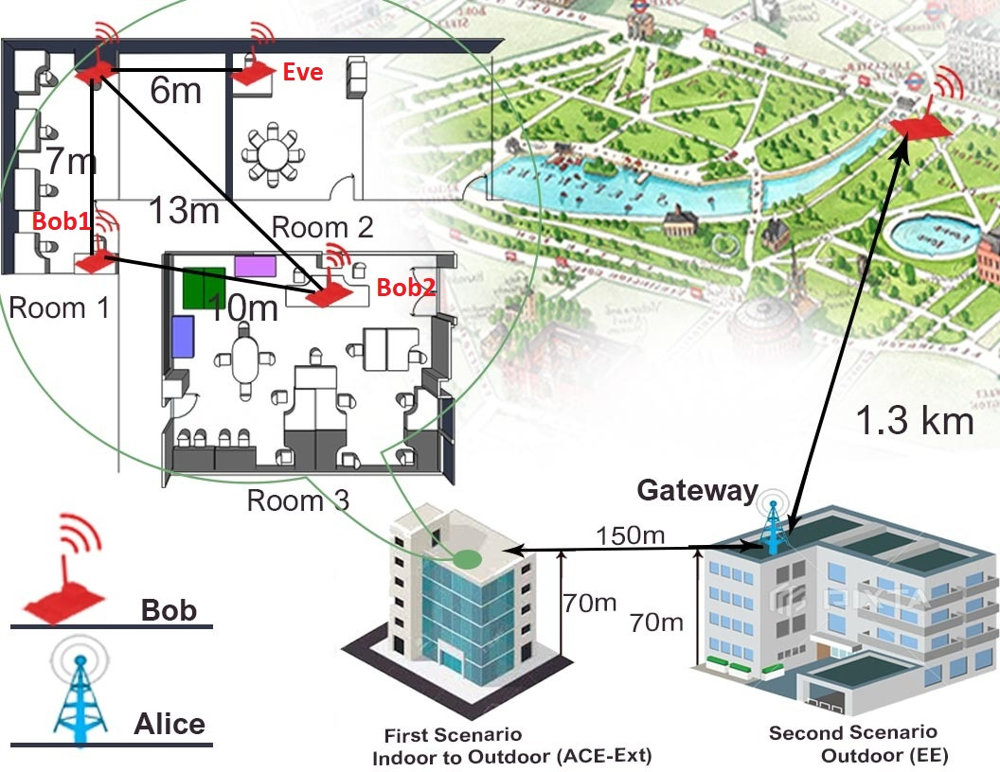

Physical layer security (PLS) schemes use the randomness of the channel parameters, namely, channel state information (CSI) and received signal strength indicator (RSSI), to generate the secret keys. The motivation behind this work is threefold, 1) limited work in PLS schemes in long-range (LoRa) wide area networks (LoRaWANs), 2) the requirement of having a high correlation between channel parameters measurements, 3) and the evaluation in either fully indoor or outdoor environments. The real-world wireless sensor networks (WSNs) and LoRa use cases might not meet these requirements, thus making the current PLS schemes inappropriate for these systems. This work proposes LoRA-LiSK, a practical and efficient shared secret key generation scheme for LoRa networks to address the limitations of existing PLS schemes. The proposed LoRa-LiSK scheme consists of several preprocessing techniques (timestamp matching, two-sample Kolmogorov Smirnov tests, and a Savitzky-Golay filter), multi-level quantization, information reconciliation using Bose–Chaudhuri–Hocquenghem (BCH) codes, and finally, privacy amplification using secure hash algorithm SHA-2.
The LoRa-LiSK scheme is extensively evaluated on real WSN/IoT devices in practical application scenarios: 1) indoor to outdoor and 2) long-range static and mobile outdoor links. It outperforms existing schemes by generating keys with channel parameter measurements of low correlation values (0.2 to 0.6) while still essentially achieving high key generation rates and low key disagreement rates (10%−20%). The scheme updates a key in approximately one hour using an application profile with a high transmission rate compared to three hours reported by existing works while still respecting the duty cycle regulation. It also incurs less communication overhead compared to the existing works.